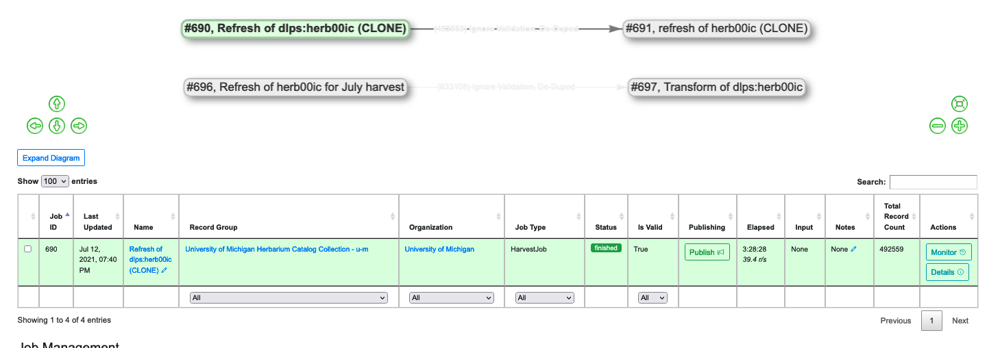

Duplicate/Merge Jobs are precisely what they sound like: they are used to copy, merge, and/or duplicate Records in Combine.
This section covers how to run Duplicate/Merge Jobs, building on the more generation information in “Part 7: Running Jobs.”
The first step for is to go to a Record Group’s overview page and click the blue “Duplicate/Merge Job” button. You may need to scroll down the page to find the button. Once you click it, you will be taken to a “New Job” page.
On the New Job page, you first have the option of giving the Job a name and adding notes. Below that, indicated by a blue alert bar, is an option to show Jobs from other Record Groups. Clicking this option will expand the page to display all existing Jobs in your instance of Combine. The expanded display can be collapsed again by clicking the blue bar a second time. In most cases you will want to keep this view collapsed. If you have many Record Groups in Combine, the expanded view could be a very long list.
Below the blue bar is a red alert bar indicating the one required parameter for a Duplicate/Merge Job: a single Input Job (or possibly multiple Input Jobs).
|
| Input Jobs for a Duplicate/Merge Job |
If you do have a large number of Jobs--even within one Record Group--you can use the ‘lineage graph,’ the graphic space above the table of Jobs, to reduce the number of displayed jobs:
Click outside of the Job to clear the filter and display all Jobs in the Record Group again.
|  |
| A lineage graph filtered to a single Harvest Job |
 |
| A lineage graph filtered to display only a Transformation Job and its Harvest Job |
As an alternative, on the Duplicate/Merge page each row in the table has an additional column on the left called “Select” that provides a filter button. Clicking this button creates a popup window that can be used to set input filters for that specific job (including Organization, Record Group, Job Type, Status, or even keyword searching). When filters are applied this way, Jobs will be grayed out in the lineage graph.
 |
| The popup window for setting specific input filters |
You can select multiple Jobs for Duplicate/Merge Jobs. When Jobs are merged, a duplicate check is run for the Record Identifiers only. Below this section you will find a gold alert bar for the ‘optional parameters’ that were explained in “Part 7: Running Jobs,” including “Record Input Filter,” “Validation Tests,” “Transform Identifier,” and “DPLA Bulk Data Compare.”
Once all of these configurations are set, you are ready to scroll to the bottom of the page and click the green “Run Duplicate/Merge Job” button to begin.
The following screenshot shows the results of a Merge Job with two input Jobs from a Record Group’s overview screen:
 |
| Merging two Jobs into one Job |
Why Merge or Duplicate Records?
Combine’s data model is quite flexible...
Organization --> Record Group --> Job --> Record
...but the price of that flexibility is additional complexity in execution.
Duplicate/Merge Jobs have a variety of possible uses:
That last use case--separating a subset of valid/invalid records from a Job deserves more explanation. In that scenario you could:
 |
| Creating a ‘Job B’ of invalid Records from Job A; applying a Transformation Job only to those invalid Records; and then merging Job A and Transformed Job B together into a fully valid Job C |
This can be helpful if Job A is quite large and has only a few Records that need to be Transformed--especially if running that Transform on the entire set of Records might break--i.e. invalidate--some of the perfectly good Records in Job A.
Next: Validation